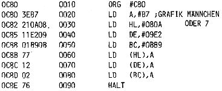
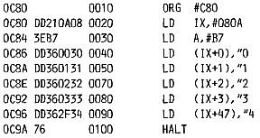
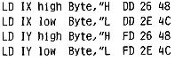

Nascom Journal |
Februar 1982 · Ausgabe 2 |
Der Pseudocode des Assemblers ORG #C80 (#^=^=Hex) bedeutet, daß das Programm bei C80 beginnt (Origin = Ursprung). In Zeile 90 ist ein Sprung (JP = Jump) nach der Adresse C82 eingetragen. Unter normalen Umständen erreicht das Programm also nie die Adresse C8D. Es ist nur für den Single Step Betrieb vorgesehen. Der Breakpoint E7 dient nur der Sicherheit. Wenn Sie das Programm mit E C80 starten, wird es bis zum nächsten Stromausfall die Register immer wieder mit FF laden.
In gleicher Weise wird mit den 16 Bit – Ladebefehlen verfahren. So lädt der Befehl 01 FFFF das Registerpaar BC mit der Hexzahl FFFF. Schreiben Sie sich selbst ein Programm, das die Register BC, DE und HL mit AABB lädt. (Sie werden feststellen, daß man beim Laden immer erst das niederwertige Byte eingeben muß).
Nun wollen wir aber endlich zu den eingeklammerten Registern kommen. Diese Art des Ladens nennt sich indirekte Adressierung; d. h. nicht das Register selbst, sondern die Adresse, die es enthält, wird geladen. Verfolgen Sie dieses Programm:
LD HL, #0D00 LD (HL), #FF RST 20H
Das Registerpaar HL wird mit der Adresse D00 geladen. Daraufhin lädt man diese Adresse indirekt (Sie steht ja in HL) mit dem Wert FF. Sie können das nach dem Programmende durch M D00 (Modify- Befehl) selbst feststellen. Die Adresse D00 muß FF enthalten. Den gleichen Effekt sollte der Befehl LD (#D00), #FF bewirken, aber er existiert weder in der Tabelle noch im Z80 Chip. Man könnte die Adresse allerdings auf dem Umweg über das A Register laden.
LD A,#FF LD (#D00),A
Glücklicherweise ist unser Bildschirmspeicher genau wie ein RAM-Speicher zu behandeln, und wir können direkt auf dem Schirm sehen, was geladen wird, um unsere Theorien praktisch zu erproben. Allerdings werden auf dem Schirm nicht die Hexzahlen, sondern die zugehörigen ASCII-Codes abgebildet. (Im Construction Article des Nascom finden Sie eine Übersicht über die Bildschirmadressen und die ASCII-Codes; für Nascom 1 Seite 32 und 33). Spielen Sie das Laden von Bildschirmadressen mit verschiedenen Registern durch.

Der HALT Befehl (76) bringt den Prozessor in einen Wartezustand. Er kann ihn nur durch RESET verlassen.
Außer den 3 Registerpaaren und dem Akku (Register A) finden Sie noch die Indexregister IX und IY in der Tabelle. Man kann sie mit einer Adresse laden und dann Werte an Adressen übergeben, die durch die Addition des Index d zur Adresse ermittelt werden. Die Ausführung des folgenden Programms macht den Vorgang deutlich.

Man kann die Indexregister aber auch wie das HL Register behandeln, d.h. nicht nur als Registerpaar sondern auch als Einzelregister. Dazu setzt man vor den entsprechenden Code für H oder L einfach DD (entspricht IX) oder FD (entspricht IY). Führen Sie folgendes Programm in Einzelschritten aus, und vergleichen Sie die Registeranzeigen von IX und IY.

Diese Manipulation ist nicht im Manual vorgesehen, auch der Assembler versteht sie nicht; aber sie läuft auf den meisten Z80 Chips und leistet gute Dienste, wenn man zusätzliche Register benötigt.
Eine reguläre Art, zusätzliche Register zu gewinnen, ist die Benutzung des zweiten Registersatzes (Alternate Register Set). Diese Register werden einfach durch den
| Seite 24 von 32 |
|---|